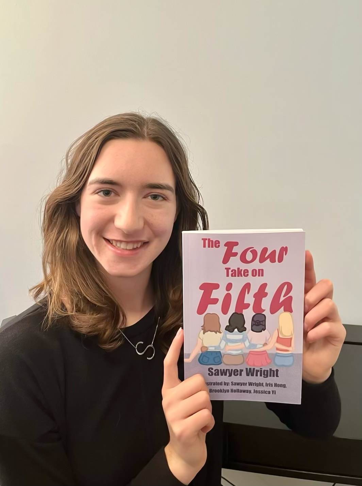
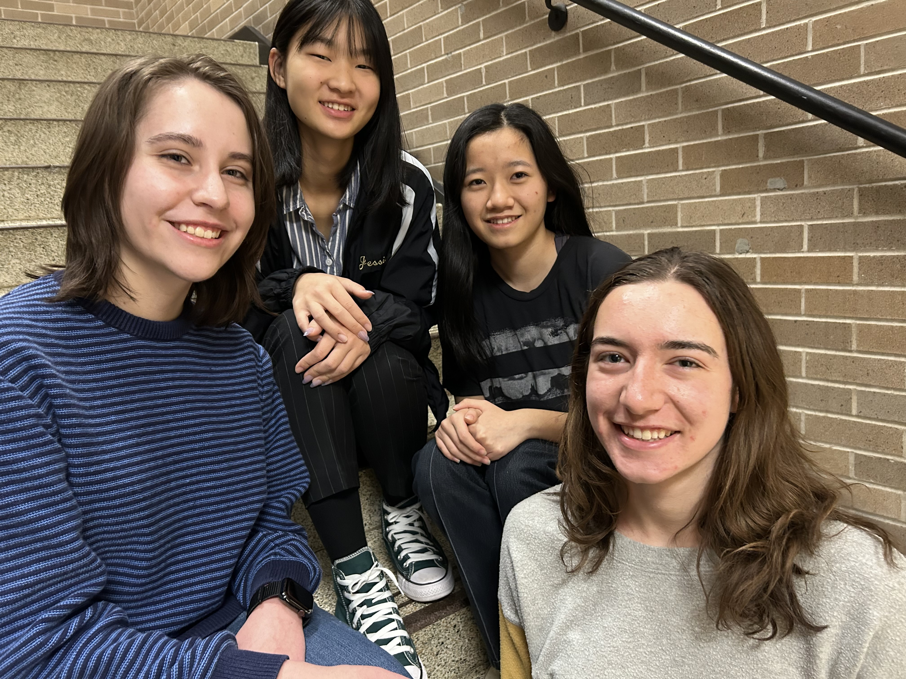

Author’s Note: The Four Take on Fifth’s mission and creation
Hello Readers!
Did you know that only 68% of fifth grade girls describe themselves as confident, and by ninth grade the numbers drop to 50%? (Read more from ROX survey) The survey also reported that the more time girls spend using social media, the less likely they are to describe themselves as confident. To combat this, it is essential for girls to learn from positive messages that accurately represent their ages and struggles. My goal with The Four Take on Fifth is to provide a model for upper-elementary school girls on how to deal with challenging situations while maintaining healthy friendships and growing self-confidence.
I created The Four Take on Fifth for my Girl Scout Gold Award project, the highest award a Girl Scout can earn. I have always had a great love for books, and growing up I found many of my most impactful role models to be fictional characters. I knew I wanted to create a story with characters and challenges that girls could relate to. As part of my initial research, I interviewed several elementary school girls about their challenges and thought back to my own experiences at that age. I developed each main character in the novel to be unique in her interests and personality. Diversity was always a priority for the characters’ story and design, because I wanted every girl to feel represented when she read the book.
My hope for The Four Take on Fifth is to create a lasting impact on my community and beyond. The book is available on Amazon for anyone to purchase and can be found in North Allegheny School District’s elementary school libraries as well as select public libraries in Pennsylvania and Connecticut. I intend to continue my outreach via book donations to nonprofit organizations and other public libraries so that young girls across the country can read positive messages about the importance of friendship, family, and confidence.
I could not have completed this project without the help and advice of others. Brooklyn Hollaway, Iris Hong, and Jessica Yi are my wonderful artists. The four of us each illustrated one chapter of the novel based on my initial sketches. I encouraged everyone to embrace their individual art styles, which resulted in the chapters having a unique difference in style that suited the characters’ diversity and personality. I also established a team to review the content of the book. Tina Tomczak, my former elementary school librarian, approved the story as age appropriate. She also served as a connection to other libraries within the school district and helped organize my author’s workshop presentation at the elementary school. A draft of the book was reviewed by a counselor for accuracy concerning mental health as well as my friend Aneri Shethji for cultural sensitivity concerning the depiction of Diwali. My editor, Riley Smith, helped with the language and organization of my story and encouraged my transition from a script-based graphic novel to a full-prose illustrated novel. Last but certainly not least, I am eternally grateful for the support of my parents as well as my gifted programs teacher, Christina Ruffolo, for their continued advice, assistance, and encouragement throughout my project.
Thank you for your interest in The Four Take on Fifth and happy reading!
Sawyer Wright
Comments or questions?
Email me at thefourtakeonfifth@gmail.com 